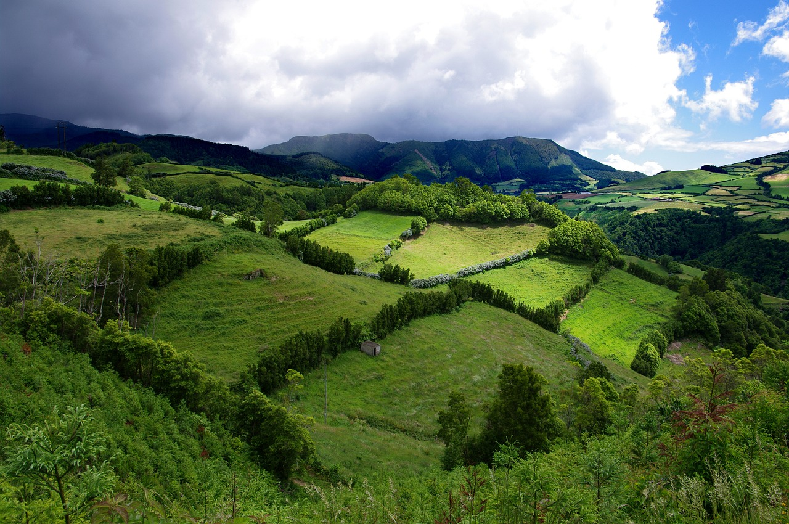

Azoren
São Miguel
São Miguel (zu Deutsch Sankt Michael) ist die größte Insel der Azoren. Sie zählt zur Ostgruppe des Archipels und hat eine Fläche von 746,8 Quadratkilometern. Die Insel ist 63,7 km lang und 16,1 km breit. Auf São Miguel lebten 2016 etwa 138.000 Menschen, rund 68.000 davon in der Hauptstadt Ponta Delgada.
Quelle: Wikipedia